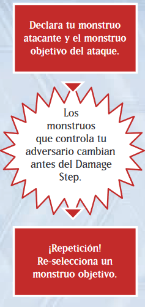
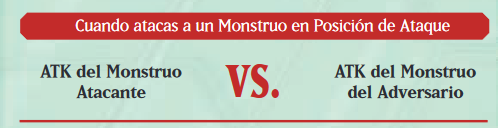
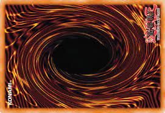
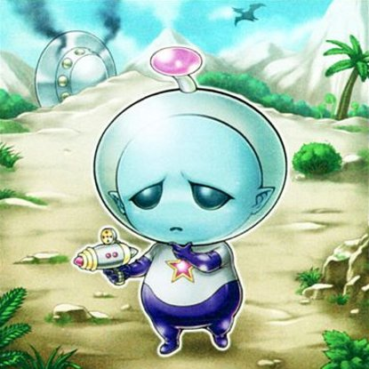
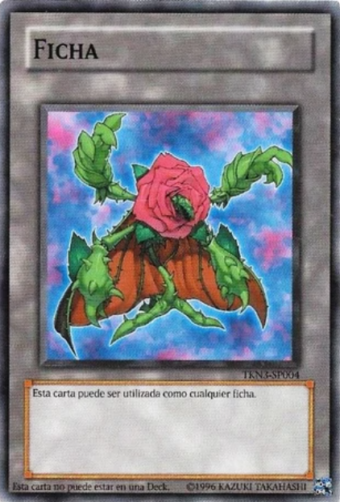
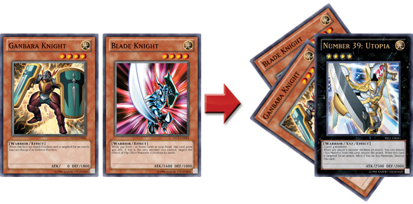

Normas del juego
Reglas de Repetición durante el Battle Step
Después de que hayas anunciado tu monstruo atacante y el monstruo objetivo del ataque durante un Battle Step, puede suceder que el objetivo del ataque sea retirado del Campo, o un nuevo monstruo sea colocado en el Campo de tu adversario antes del Damage Step debido al efecto de una carta. Cuando esto sucede se dispara una "Repetición". Cuando esto ocurre puedes elegir seguir atacando con el mismo monstruo o atacar con un monstruo diferente, ¡o hasta no atacar! Sin embargo, si atacas con un monstruo diferente, el primero monstruo también se considera que ha declarado un ataque y, por lo tanto, no puede atacar de nuevo este turno
Reglas de Batallas de Monstruos
Reglas del Damage Step
Durante el Damage Step hay límites a qué cartas puedes activar. También, durante el Damage Step, los efectos de Volteo se resulven de manera un poco diferente a como se resuelven normalmente.
- Limitaciones en la Activación de Cartas
- Atacar una Carta Boca Abajo
- Activación de un Efecto de Volteo
Durante el Damage Step sólo puedes activar Cartas Trampa de Contraefecto o cartas con efectos que directamente cambien el ATK o la DEF de un monstruo. Además, estas cartas sólo pueden ser activadas hasta el comienzo del cálculo de daño.
Si atacas a una carta en Posición de Defensa boca abajo, voltea la carta a Posición de Defensa boca arriba durante el Damage Step. Ahora puedes ver la DEF del monstruo para poder calcular el daño.
Cuando un monstruo atacado es volteado boca arriba, todos los efectos de Volteo se activan y resuelven después del cálculo de daño. Si necesitas seleccionar un monstruo como objetivo del efecto de Volteo, no puedes elegir un monstruo que ya haya sido destruido durante el cálculo de daño.
Determinando el daño
Calculas el daño de batalla basándote en la posición de batalla del monstruo que estás atacando. Si atacas un monstruo en Posición de Ataque, compara ATK con ATK. Si atacas un monstruo en Posición de Defensa, compara el ATK de tu monstruo con la DEF del monstruo atacado.
- Victoria
- Empate
- Derrota
Cuando el ATK de tu monstruo atacante es mayor que el ATK del monstruo del adversario, el monstruo atacante destruye al monstruo del adversario y lo manda al Cementerio. La cantidad en la que el ATK de tu monstruo atacante exceda el ATK del monstruo del adversario es el daño de batalla que se resta de los LP de tu adversario.
Cuando el ATK de tu monstruo atacante es igual que el ATK del monstruo del adversario, el resultado se considera un empate u ambos monstruos son destruidos. Ninguno de los jugadores recibe daño de batalla.
Cuando el ATK del monstruo atacante es menor que es ATK del monstruo del adversario, el monstruo atacante es destruido y mandado al Cementerio. La cantidad en la que el ATK del monstruo del adversario exceda el ATK de tu monstruo atacante es el daño de batalla que se resta de tus LP.
Cuando atacas a un monstruo en posición de defensa
- Victoria
- Empate
- Derrota
Cuando el ATK de tu monstruo atacante es mayor que la DEF del monstruo del adversario, el monstruo atacante destruye al monstruo del adversario y lo manda al Cementerio. Ninguno de los jugadores recibe daño de batalla.
Cuando el ATK de tu monstruo atacante es igual que la DEF del monstruo del adversario, ninguno de los monstruos es destruido. Ninguno de los jugadores recibe daño de batalla.
Cuando el ATK de tu monstruo atacante es menor que la DEF del monstruo del adversario, ninguno de los monstruos es destruido. La cantidad en la que la DEF del monstruo del adversario exceda el ATK de tu monstruo atacante es el daño de batalla que se resta de tus LP.
Si tu adversario no tiene monstruos
Si no hay monstruos en el Campo de tu adversario, puedes atacar directamente. La cantidad total del ATK de tu monstruo atacante es el daño de batalla que se resta de los LP de tu adversario.
Otras Reglas
Cartas Prohibidas o Limitadas
Normalmente, tu Deck (incluyendo la Deck Extra y la Side Deck) puede contener hasta 3 copias de una carta con el mismo nombre. Pero ciertas cartas tienen restricciones específicas en cuanto a cantidad que limitan aún más el número de cartas que pueden estar incluidas en el Deck. Hay 3 tipos de restricción: las cartas limitadas están restringidas a 1 copia por Deck, mientras que las Semi-Limitadas están restringidas a 2 copias por Deck. Las cartas Prohibidas jamás se pueden incluir en el Deck. La lista de cartas Pohibidas y Limitadas se actualiza regularmente, es publicada en la Web Oficial de Yu-Gi-Oh! JCC.
Fichas de Monstruos
Las Fichas de Monstruos son monstruos que aparecen en el Campo como resultado del efecto de una carta. No se incluyen en el Deck y no pueden ser mandadas a ningún otro lugar que el Campo, como la mano o el Cementerio. Cuando una ficha es destruida o mandada a la mano o el Deck, simplemente se retira del Campo. Puedes utilizar las Fichas oficiales o monedas, protectores de cartas o cualquier marcador similar (mientras pueda indicar Posición de Ataque o Defensa), como Fichas de Monstruo y jugarlos en las Zonas de Monstruo. Cada Ficha de Monstruo usa 1 de tus 5 Zonas de Monstruo. Su posición de batalla siempre es Posición de Defensa boca arriba. Las Fichas no pueden utilizarse como Materiales Xyz.
Conocimiento Público
La cantidad de cartas en la mano o Deck de cada jugador, las cartas en su Cementerio y sus LP actuales son de conocimiento público y ambos jugadores pueden verificarlo en cualquier momento. Si te preguntan, debes responder a tu adversario pero debes pedirles permiso antes. Además, no puedes cambiar el orden de las cartas mientras verificas su Cementerio.
Si ambos jugadores realizan acciones simultáneas
Para casos del estilo de "Cada jugador selecciona 1 monstruo", en donde ambos jugadores deben resolver un efecto simultáneamente, el jugador activo resuelve el efecto primero. En este ejemplo, después de que el jugador activo seleccione un monstruo, el otro jugador selecciona el suyo.
Cuando se activan múltiples cartas simultáneamente
Si los efectos de cartas de Velocidad de Hechizo 1 (como Efectos Disparados) se activan al mismo tiempo, éstos se resolverán con una Cadena especial. Esta Cadena se construye comenzando con los efectos del jugador activo. Si sólo hay un efecto, ese será el Eslabón de Cadena 1. Si hay 2 o más efectos, el jugador activo construye la Cadena con los efectos de sus cartas, seleccionando el orden en el que se incorporan a la Cadena. Luego el adversario continúa la Cadena con sus efectos. Por esto, los efectos se resolverán comenzando con los del adversario.
Monstruos con 0 ATK
Los monstruos con 0 ATK no pueden destruir nada en batalla. Si dos monstruos en Posición de Ataque con 0 ATK batallan entre si, ninguno es destruido.
Reglas vs Efectos de Cartas
Si hay alguna discrepancia entre las reglas básicas y el efecto de una carta, el efecto de la carta tiene precedencia. Por ejemplo, un monstruo sólo puede atacar una vez por turno, pero con el efecto de una carta es posible hacerlo atacar dos veces.
Contadores
Puede ser que necesites colocarlos sobre una carta para efectos de algunas cartas. No puedes poner contadores a menos que el efecto de la carta lo permita. Las castas pueden tener efectos que cambien según el número de contadores como coste. Algunos contadores tienen nombres específicos, como "Contador Mágico" o "Contador Reloj". Aparte de sus nombres, cada contador individual en sí no tiene cualquier efecto.
Acciones con las que no puedes iniciar una Cadena
Sólo puedes crear una Cadena al responder a la activación de una carta o efecto. Invocar un monstruo, Sacrificar, cambiar la posición de batalla de un monstruo y pagar costes no son activaciones de efectos y, por lo tanto, no puedes responder a esas acciones usando una Cadena.
Materiales Xyz
Los monstruos que se utilizan para una Invocación Xyz se llaman "Materiales Xyz", y se ponen debajo del Monstruo Xyz, para mostrar que están acoplados a este. Los monstruos que se convierten en Material Xyz no se tratan como cartas que estén en el Campo. Cuando un Monstruo Xyz deja el Campo, todos los Materiales Xyz que tenga acoplados son mandados al Cementerio. Si un Monstruo Xyz es volteado boca abajo, o pasa a ser controlado por el adversario, los Materiales Xyz no son mandados al Monstruo Xyz.
Deja el Campo
Algunos monstruos tienen efectos que se activan cuando "dejan el Campo". Por ejemplo, estos efectos se activan cuando el monstruo es mandado al Cementerio, o desterrado, o devuelto a la mano o el Deck Extra. Cuando un monstruo en el Campo es barajado al Deck Principal, o se convierte en Material Xyz, ya no es una carta en el Campo; sin embargo, lo efectos que se activen cuando "deja el Campo" no se activarán.
Al azar
Cuando el efecto de una carta dice que elijas una carta al azar, no hay un modo oficial de hacerlo, solo hay que asegurarse que ninguno de los dos jugadores sepa qué carta está eligiendo.
Atacar Directamente
Atacar directamente significa que un monstruo ataca a un jugador en vez de atacar a un monstruo. En este caso, el daño al jugador será igual al ATK del monstruo. Algunos monstruos tienen un efecto que les permite atacar directamente aunque el adversario controle a un monstruo.
ATK (o DEF) Original
El ATK (o DEF) Original es el número de puntos de ATK (o DEF) impreso en la Carta de Monstruo. Esto no incluye un incremento por parte de una Carta de Monstruo. Esto no incluye un incremento por parte de una Carta Mágica de Equipo u otra carta de efecto.
Barajar
No hay reglas para cómo barajar, pero mientras se baraja no puedes mirar las que se están barajando u organizar las cartas y después barajar.
Busca en tu Deck
Siempre que un efecto te haga añadir una carta a tu mano, desde tu Deck, o Invocar un monstruo de Modo Especial desde tu Deck, puedes tomar tu Deck y buscar en él la carta apropiada. Debes barajar tu Deck cada vez que busques en él y dejar que tu adversario o lo baraje o lo corte. No puedes activar un efecto para buscar en tu Deck una carta si no tienes una carta en tu Deck con las características requeridas.
Carta de Equipo
Adicionalmente a las Cartas Mágicas de Equipo, a veces las Cartas Trampa o de Monstruo pueden equiparse a un monstruo. Las Trampa equipadas siguen siendo Cartas Trampa, pero los monstruos equipados son considerados como Mágicas de Equipo. El término "Carta de Equipo" incluye las 3 clases (las Mágicas de Equipo comunes, las de Trampa equipadas y los monstruos equipados a otros monstruos). Si una Carta de Monstruo está equipada a otro monstruo, permanece equipada a ese monstruo y no puede ser movida a un objetivo distinto, ni siquiera por los efectos de cartas que normalmente podrían hacerlo. EXCEPCIÓN: Los monstruos de Unión equipados por sus propios efectos pueden ser movidos por los efectos de cartas adecuados.
Cartas Desterradas
Así como una carta que ha sido utilizada normalmente va al Cementerio, una carta que es desterrada es sacada del Campo. Debes devolver tus cartas desterradas para poder usarlas en el próximo Duelo.
Cartas en el Campo
Cuando está escrito "cartas en el Campo" en el texto de una carta, significa todas las Cartas en el Tablero de Juego que no estén en el Cementerio, Deck y Deck Extra.
Colocar
Jugar una carta boca abajo se dice Colocar. Para las Cartas de Monstruo, jugarlas en Posición de Defensa boca abajo es llamado Colocar. Cualquier carta que está boca abajo en el Campo es una carta Colocada.
Control
Una carta que controlas es una carta en tu lado del Campo. Tu eres el jugador que toma las decisiones en cuanto a esa carta. Tu adversario puede tomar el control de una carta que controles mediante el efecto de una carta. En ese caso la carta será movida al lado del Campo de tu adversario. De todos modos, si tu carta que está controlada por tu adversario es mandada al Cementerio o devuelta a la mano o al Deck, siempre volverá a la mano o Deck de su propietario
Daño de batalla
El daño de batalla es el daño infligido a un jugador por un monstruo atacante, o en una batalla entre dos monstruos. Esto es diferente al daño por el efecto de un Monstruo de Efecto, Carta Mágica o de Trampa.
Daño de batalla de penetración
Algunos monstruos infligen daño de batalla de penetración cuando atacan a un monstruo en Posición de Defensa. Esto significa que infliges daño a los LP de tu adversario igual a la diferencia entre el ATK del monstruo atacante y la DEF del monstruo defensor.
Descartar
Descartar significa mandar al Cementerio una carta en tu mano. Esto puede ocurrir por el efecto de una carta o como reajuste del número de cartas en tu mano durante la End Phase.
Destruir
Una carta es destruida cuando es mandada al Cementerio a causa de una batalla entre monstruos o por un efecto que destruye una carta. Una carta que es devuelta del Campo a la mano o Deck, o que es mandada al Cementerio como coste o Sacrificio no está considerada como “destruida”.
Efectos de Cartas
El efecto de una carta es la habilidad especial escrita en ella, como el efecto de una Carta Mágica o Trampa, o de un Monstruo de Efecto. Los costes necesarios para activar la habilidad de una carta no son parte del efecto. Las condiciones que describen cómo jugar un "Monstruo de Invocación Especial" tampoco son efectos.
Excavar
Cuando una carta dice que se han de “excavar” cartas de tu Deck, se muestran a ambos jugadores. Luego, antes de hacer nada, aplica las instrucciones del efecto de la carta que las ha excavado. Las cartas que están siendo excavadas siguen siendo tratadas como si estuvieran en el Deck hasta que sean mandadas a otro lugar por las instrucciones de la carta.
Mandar al Cementerio
Una carta puede ser mandada al Cementerio de varios modos. Destruyendo una carta, descartándola y Sacrificando un monstruo son acciones que mandan una carta al Cementerio, y normalmente activan los Efectos de Disparo del tipo "Cuando esta carta es mandada al Cementerio...". EXCEPCIÓN: Cuando una carta desterrada es movida al Cementerio, no se considera que sea "mandada al Cementerio".
Monstruo Equipado
Un monstruo que es equipado con una Carta de Equipo es un "monstruo equipado". Cuando este monstruo es destruido o volteado boca abajo, la carta equipada pierde su objetivo y es destruida y mandada al Cementerio.
Mostrar
Cuando un efecto dice que debes mostrar una carta, se muestra a ambos jugadores. Puedes tener que mostrar una carta boca abajo, de tu mano o de la parte superior de tu Deck. Mostrar una carta no es activada o activar su efecto de Volteo. Normalmente, las cartas mostradas se devuelven a su posición original después de haber sido mostrada a los jugadores.
Pagar un coste
Un coste es una acción requerida a un jugador para activar una carta, efecto, o Invocar un monstruo. Sacrificar para Invocar por Sacrificio a un monstruo de Nivel 5 es un ejemplo de coste. Otros costes comunes son descartar, pagar LP o desterrar cartas. Tienes que pagar cualquier coste antes de declarar la activación de la carta. Aún si es negada la activación de la carta, no se te devuelve el coste que pagaste.
Sacrificio
Sarificar es mandar a un monstruo que controles al Cementerio. Puedes Sacrificar a un monstruo boca arriba o boca abajo mientras no esté especificado. Sacrificar un monstruo es un posible coste para Invocar a un monstruo o activar un efecto. Un monstruo mandado al Cementerio por Sacrificio no se trata como si fuera "destruido".